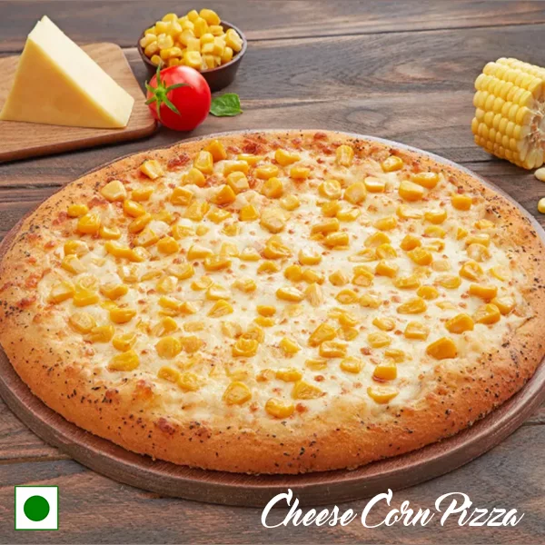

Here's an interesting fact about me: I'm passionate about technology and the great adventure activities. I love hiking and exploring new places.
I absolutely love cheese and corn pizza because of its delicious combination of flavors, the melted cheese, the sweetness of corn, and the perfectly baked crust. It's the ultimate comfort food for me.
Searching for exciting ways to keep fit and active? Look no further! Below, you'll find a selection of sports I enjoy, each with its unique reasons for recommendation, along with the weekly hours to invest in these activities.
| Sport Name | Reason for Recommendation | Hours per week |
|---|---|---|
| Tennis | Great for improving agility and focus | 4 |
| Hiking | A fantastic way to connect with nature | 6 |
| Swimming | Excellent full-body workout | 5 |
| Cycling | Eco-friendly and fun transportation | 3 |